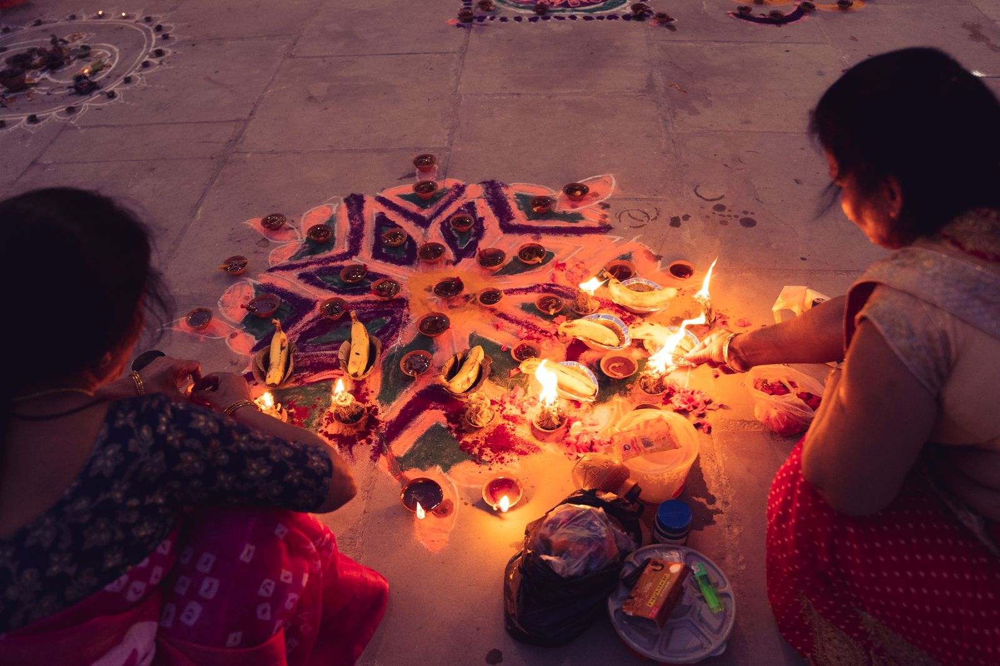
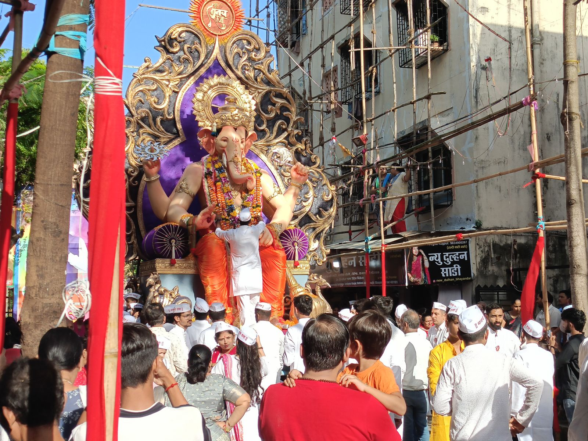
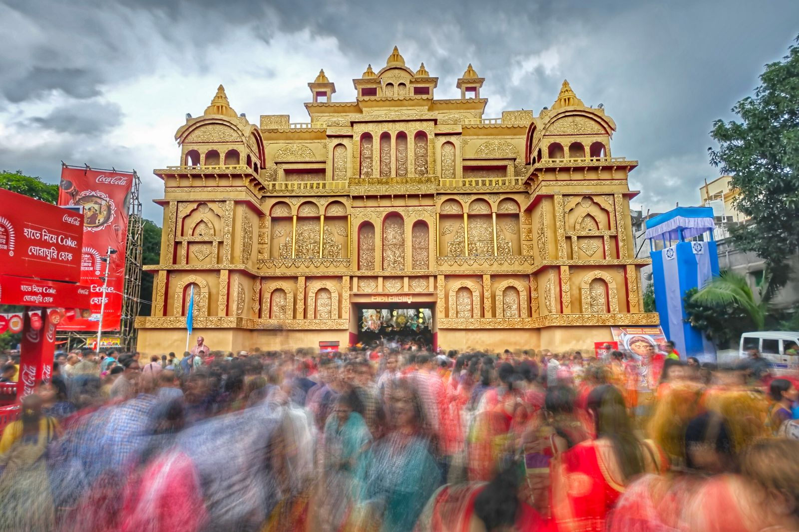

Ground level only. No drones, no staging, no second takes. hello@utsav-lens.in
The Films — Case Files
Case Files
Every film this practice delivers gets a file: the brief, the decisions the festival forced, and the outcome with its dates. Three are published here in full. The frames are reference photographs, credited as always — the films themselves belong to the organisers who commissioned them.
Case File 01 — Highlight Film
Lit Once
Diwali · Pune · 18–20 October 2025 · for a federation of fourteen housing societies

TC 18:26:09:14 · CAM A The first evening: rangoli and diya-lighting, filmed at arm's length before the crowds peaked.REFERENCE PHOTOGRAPH PEXELS · YOGENDRA SINGH
The brief
Fourteen housing societies share one Diwali programme — three nights of diya lighting, the aarti, and the children's lantern parade. The federation wanted one four-minute highlight film to open its annual meeting on 1 November and to send to members who had moved away. The window was not abstract: the meeting date was fixed, and the film had to exist before it.
The decisions
The honest problem was the aarti. The crowd packs shoulder to shoulder around a few hundred flames, and the long lens from the back of the hall gave faces the size of coins and grain like sand. That footage was unusable, and this file says so. What was done instead: shorter lenses, and positions at the edge of the aarti circle agreed in advance with the society volunteers; the diya-lighting filmed at arm's length on the first evening, before the crowds peaked; the lantern parade filmed walking backwards at the children's pace, with two volunteers clearing the way.
One shot the brief imagined — a slow push through the crowd during the aarti — was refused, and the refusal is recorded here: you do not push through people at prayer for a prettier frame. The federation's secretary accepted the refusal in the same conversation.
The outcome
Twenty-one hours of raw footage across two cameras and three days, cut at Table E1's highlight ratio. Delivered 28 October 2025 — eight days after the last lamp, four days before the meeting it was made for. The film opened the meeting; the federation booked the following Diwali before this one was cold.
Case File 02 — Procession Film
The Stretch We Did Not Film
Ganesh Visarjan · Pune · 6 September 2025 · for a sarvajanik mandal in its 90th year

TC 16:03:51:07 · CAM B The route as the mandal walks it — filmed from inside the procession, at walking pace.REFERENCE PHOTOGRAPH PEXELS · NILESH RY
The brief
The mandal's visarjan procession is the oldest in its neighbourhood — ninety years of the same route. They wanted the full route as a procession film, about twelve minutes, for the mandal's archive and for the following year's sponsor talks. “Full route” turned out to be the phrase the whole job hinged on.
The decisions
At the conditions meeting — held before any fee was discussed — the mandal named two no-film stretches: the 400 metres past the children's hospital, where the drums stop and the procession passes in silence; and the approach to the immersion platform, where cameras have never been permitted. Both were written into the booking as working conditions, not discovered on the day.
The route was re-planned around them: three fixed camera positions covering the stretches before and after the hospital, the walking camera lowering at the zone line and rejoining on the far side. And the gap was not papered over in the edit. The delivered film holds six seconds of black with a title card — “The procession passes the children's hospital in silence. This stretch is not filmed.” — at the exact point in the route where it happens. The mandal's secretary asked for that card to stay in every future cut.
The outcome
Delivered 19 September 2025, inside the window. The mandal renewed for 2026 and added the aagman — the idol's arrival procession — to the booking. The two un-filmed stretches remain un-filmed; they are counted in the gallery's record as zones honoured, not as footage lost.
Case File 03 — Organiser Aftermovie
Five Nights, One Morning
Durga Puja · Kolkata · 28 September – 2 October 2025 · for a neighbourhood puja committee

TC 20:12:44:16 · CAM A Sashti evening, the pandal at full crowd — the aftermovie's centre of gravity.REFERENCE PHOTOGRAPH PEXELS · DIBAKAR ROY
The brief
A neighbourhood puja committee needed an aftermovie with a job: open the sponsor meeting on 21 October and anchor the next year's fundraising. Five nights of pandal crowds, rituals and cultural programmes, plus the Dashami morning — cut to under seven minutes, with the committee's credits and the sponsors' names exactly right.
The planner's arithmetic — written down before the festival
Two cameras × five days at Table C1 = 35.0 hours raw. Aftermovie ratio 3.2 (Table E1) = 112 suite-hours = 14 edit days. Last filming day 2 October; +1 ingest, +14 edit, +1 finishing = delivery 18 October. The booking window closed 19 October. Inside — by one day. One day of slack is not a plan, so the booking carried a pre-agreed insurance line: a second editor on standby from edit day three, paid only if called.
What actually happened
Rain on the Saptami evening cut one pandal session short — raw footage landed at 31.5 hours, one camera-day lost and counted. The second editor was called on day three anyway, because the committee moved its sponsor meeting a day earlier. Edit closed in seven working days across two suites. Delivered 15 October 2025 — three days ahead of the plan, six days before the meeting.
The outcome
The film opened the sponsor meeting; two sponsors renewed in the room. The committee's organising secretary said the rest, in the testimonial hung in the gallery — attached to this film, where it belongs.
Not hung in the gallery
The Late Shelf
Nine films in nine seasons were delivered late. They are not on these walls, and they are not hidden either: two were re-shot after monsoon cancellations, one followed an editor's illness, and six were simply underestimated by the person writing this page. The planner behind the office door exists because of those six — every ratio in Table E1 carries their correction, and every booking since 2023 has been dated by it. A practice that films other people's once-a-year days does not get to be casual about dates.
Case file 04 is unwritten.
It starts with a festival's dates and an honest conversation about whether the film can land in time. If the planner says it cannot, this practice will tell you that before taking a deposit.